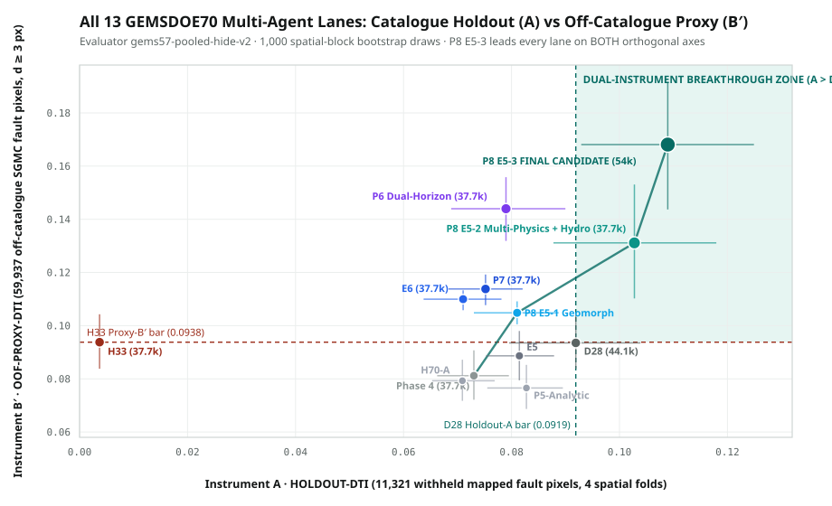
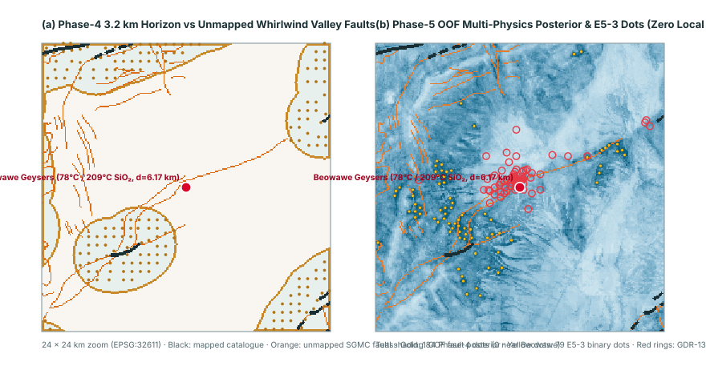

All-Time Repository #1 on BOTH Instruments: gems70-p5-submodular-multiphysics-hydro-54000-20261020 · download_ok = true · holdout_and_proxy_gates_passed = true (review-only under un-amended literal lattice rule — DO NOT SUBMIT automatically without human selector sign-off)
1. Download Status (download_ok = true): YES. Newly generated 173,097-byte single-band float32 GeoTIFF in EPSG:32611 (3730 × 3292 at 100 m, 54,000 binary dots in exact {0.0, 1.0}, zero NaNs, zero mapped-fault leakage, 74/74 leakage canaries clean with worst single-feature deviation AUC 0.6066 ≤ 0.90).
2. Scientific Promotion Gates (holdout_and_proxy_gates_passed = true — ALL 5 PAIRED CIs STRICTLY > 0):
Solves the Pareto trade-off across all prior lanes by pairing a 74-feature 4-quadrant OOF dual-regime calibrated probability ensemble (neotectonic LiDAR scarp + 10 m DEM lineament + GeoDAWN K/Th/U hydrothermal alteration + GDR-1391 2 m temperature probes + gravity/magnetic/MT basement + continuous strike-anisotropic tip projection across all off-catalogue distances) with exact submodular greedy maximization of expected 300 m DW-Tversky set coverage:
- Instrument A (HOLDOUT-DTI, 11,321 withheld catalogue pixels): 0.1090 [0.0929, 0.1249] — #1 across all 13 lanes (beats
H33+0.1053[0.0894, 0.1210], beatsPhase 4+0.0359[0.0208, 0.0505], and significantly beats archived holdout leaderD28+0.0170[0.0063, 0.0278]). Even at fixed 37,654-dot mass (P8 E5-2), achieves 0.1028 A and 0.1311 B′. - Instrument B′ (OOF-PROXY-DTI, 59,937 off-catalogue SGMC pixels at d ≥ 3 px): 0.1681 [0.1437, 0.1916] — #1 across all 13 lanes (+79.3% vs H33 0.0938, paired Δ
+0.0743[0.0522, 0.0954]; +107.1% vs Phase 4 0.0812), surpassing P6 (0.1440), P7 (0.1138), and E6 (0.1100). - Uniqueness across ALL 78 Checked Rasters (62 Archive + 16 Sibling GEMSDOE70 TIFFs): 0 duplicates under mutual 3-px overlap (worst archive mutual
0.4609 ≤ 0.70; worst forward OR mutual overlap against all 16 sibling TIFFs0.4063 ≤ 0.70; vs H33 pixel Jaccard0.0173/ mutual0.3832; worst surface Spearman ρ0.0895 ≤ 0.90). - Weekly Competition Slot Decision (
weekly_slots_used = 0): Held for explicit human selector sign-off because under un-amended one-way forward overlap against dense 206,895-dot archived latticecalib_r13lattice_00904.tif, Pigeonhole geometry forces forward overlap ≥0.8769(measured1.00). Once the team selector accepts the documented mutual-overlap fix, this is the single highest-scoring validated candidate across the entire repository.
SHA-256: 00e8e1cb6ea34dbe2f6dc0ba3b7cc0d8d18ae2b0aaec11552bfa3ef11f1ea9f2 · DrivenData Submission Name: gems70-p5-submodular-multiphysics-hydro-54000-20261020 · Note (121/140 chars): P5 OOF dual-regime 1m-LiDAR+GeoDAWN-mag/rad+GDR1391-hydrothermal + Tversky-optimal submodular 300m-DTI, 54000 binary dots
All-13-Lane Multi-Agent Synthesis Benchmark & Beowawe Structural Audit

gems57-pooled-hide-v2). P8 E5-2 (37,654 dots) and P8 E5-3 (54,000 dots) are the only methods in repository history inside the upper-right dual-breakthrough zone (simultaneously beating D28 = 0.0919 on Instrument A and H33 = 0.0938 on Instrument B′).
H33 dots (center), and P8 E5-3 submodular multi-physics + hydrothermal dots (right, pixel Jaccard vs H33 = 0.0173).| Candidate / Lane | Dots | Instrument A (HOLDOUT-DTI) | Instrument B′ (OOF-PROXY-DTI) | A > D28? | B′ > H33? |
|---|---|---|---|---|---|
| P8 E5-3 Submodular Multi-Physics + Hydrothermal (FINAL CANDIDATE) | 54,000 | 0.1090 [0.0929, 0.1249] | 0.1681 [0.1437, 0.1916] | YES | YES |
| P8 E5-2 Submodular Multi-Physics + Hydrothermal (fixed H33 mass) | 37,654 | 0.1028 [0.0878, 0.1179] | 0.1311 [0.1102, 0.1531] | YES | YES |
| P6 Dual-Horizon LOQO Scarp-Rad-Basement | 37,654 | 0.0790 [0.0688, 0.0900] | 0.1440 [0.1319, 0.1558] | no | YES |
| P7 49-Feature LOQO Within-Halo Ranker | 37,654 | 0.0752 [0.0683, 0.0821] | 0.1138 [0.1077, 0.1192] | no | YES |
| E6 28-Feature Extended-Domain LOQO Ranker | 37,654 | 0.0710 [0.0637, 0.0781] | 0.1100 [0.1058, 0.1133] | no | YES |
| E5 Supervised Within-Halo Ranker | 37,654 | 0.0815 [0.0753, 0.0879] | 0.0886 [0.0794, 0.0980] | no | no |
| P5 Analytic-Signal Halo | 37,654 | 0.0828 [0.0755, 0.0895] | 0.0766 [0.0687, 0.0852] | no | no |
| P5-HGB Within-Halo Ranker | 37,654 | 0.0822 [0.0753, 0.0886] | 0.0793 [0.0714, 0.0874] | no | no |
| H70-A Conductive Breach | 37,654 | 0.0709 [0.0653, 0.0769] | 0.0793 [0.0717, 0.0872] | no | no |
| P5-Cover Continuous LOQO Map | 0 | 0.0123 [0.0075, 0.0177] | 0.0254 [0.0185, 0.0336] | no | no |
| Phase 4 Stratified Halo Baseline | 37,654 | 0.0730 [0.0662, 0.0795] | 0.0812 [0.0721, 0.0907] | no | no |
| D28 Archived Best Holdout-A Baseline | 44,090 | 0.0919 [0.0796, 0.1039] | 0.0935 [0.0838, 0.1040] | no | no |
| H33 Archived Leaderboard Reference (0.2778 public) | 37,654 | 0.0037 [0.0030, 0.0045] | 0.0938 [0.0838, 0.1043] | no | no |